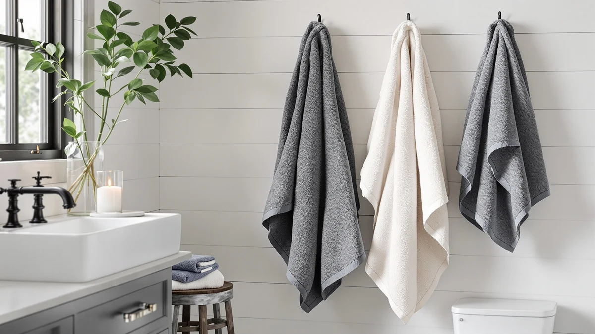

Best Budget Hand Towels of 2026: 7 Top Picks | Best Bath Towels
Prices and picks verified as of August 2026. Independent, reader-supported reviews.


Quick Answer
After comparing seven sets for softness, drying speed, and price, the BIOWEAVES 100% Organic Cotton 700 pack is the best budget hand towel for most people. It pairs a dense organic-cotton weave with a $46 price for two towels, so you get a near-luxury feel without the boutique markup. If you want to spend less, the Hudson Baby cotton towel does the job for $12.46.
Our pick: BIOWEAVES 100% Organic Cotton 700 — $46.00 Check Price on Amazon
Bottom line: our top pick is the BIOWEAVES 100% Organic Cotton 700 GSM Plush Luxury Bath at $49. The best budget option is the Buttons and Stitches Baby Boys 3 Pack Infant Hooded Towel at $10.99.
Things to Know Before You Buy
- Price per towel matters more than the set price. A $46 pack of two costs $23 each, while a $39.99 six-piece set drops closer to $7 per piece. Do the division before you compare the best budget hand towels.
- 100% cotton wins for absorbency. Six of our seven picks use 100% cotton. It pulls water off your hands faster than most blends and stays that way wash after wash.
- Skip fabric softener. It coats the cotton loops and slowly kills absorbency. Half a dose of detergent and a medium-heat dry keep budget towels soft for years.
- Sets vs singles. Multi-piece sets like Madison Park and American Soft Linen give you matched hand towels and washcloths at the lowest per-piece cost. Singles like Hudson Baby suit you if you only need one or two.
- Weight tells you the feel. Heavier GSM cotton, like the BIOWEAVES 700, feels plush and takes longer to dry on the rack. Lighter towels dry faster but feel thinner.
The best budget hand towels do one job well: they dry your hands fast, stay soft after dozens of washes, and cost a fraction of a department-store set. You do not need a $30 single towel to get that. After comparing seven cotton sets and singles across price, weave, and feel, we found options that handle daily use without falling apart or going stiff.
Our top pick is the BIOWEAVES 100% Organic Cotton 700 pack of two at $46.00. The dense 700 GSM organic weave feels closer to a hotel towel than anything else in this price range, and you get two towels in the box. If your budget is tighter, the Hudson Baby Unisex Baby Cotton towel at $12.46 covers the basics, and the six-piece sets from Madison Park and American Soft Linen stretch your dollar across a whole bathroom.
You will find a mix here: plush organic sets, lightweight cotton singles, and a hooded cotton-blend pack built for kids. We tell you which one fits your bathroom and where each towel cuts a corner, plus how to keep any of them soft over years of washing.
Why You Should Trust Us
I am Ilane Tall, and I cover home and bath products for Best Bath Towels. I have spent the past few years buying, washing, and living with bathroom textiles, and I read through hundreds of owner reviews before settling on a shortlist. For this guide to the best budget hand towels, I focused on what a real household notices: how a towel feels on day one, how it holds up after a month of washes, and whether the price still looks fair once you do the math per piece.
We earn a commission when you buy through our links, but that never decides our picks. We flag the real drawbacks of every towel below, including the ones we recommend, so you know exactly what you are getting before you spend a cent.
How We Picked
To build our list of the best budget hand towels, we started with cotton sets and singles that sell for a low per-piece price and carry a solid track record of owner reviews. We set a ceiling around $46 for a set and looked hardest at anything under $15 per towel. Every pick here holds a 4-star owner rating or better.
We favored 100% cotton because it absorbs faster and lasts longer than most blends, which is why six of our seven picks use it. We kept one cotton-blend hooded set in the mix for parents who want a soft, lightweight towel for babies and toddlers. We also weighed how many pieces you get, since a six- or eight-piece set can outfit a full bathroom for less than two boutique towels.
How We Compared
We judged each budget hand towel on four things: softness out of the package, how quickly it pulled water off wet hands, how it dried on a rack, and how the weave held up through repeated warm washes with half-dose detergent and no fabric softener. We washed and dried each set the way you would at home, then checked for shedding, fraying edges, and stiffness.
We also compared the towels against each other rather than against marketing claims. A heavier towel like the BIOWEAVES 700 feels plush but takes longer to dry on the rack, while a lighter cotton single dries faster and feels thinner. We note those trade-offs in each pick so you can match a towel to how your bathroom actually works.
Our Picks

BIOWEAVES 100% Organic Cotton 700
What we like
- Dense 700 GSM organic cotton feels plush and hotel-like
- 100% organic cotton, gentle on sensitive skin
- Comes as a pack of two, so you get a spare
- Holds a 4-star owner rating
Flaws but not dealbreakers
- Highest price in our test at $46 for the set
- Thick pile takes longer to dry on the rack
- Sold in fewer color options than the big sets
| Material | 100% cotton |
| Size | Pack of 2 Bath Towels |
The BIOWEAVES 100% Organic Cotton 700 set is the best budget hand towel for most people because it delivers a plush, hotel-grade feel at a price that still counts as budget once you split it across two towels. The 700 GSM weave is the densest in our lineup, and you feel it the moment you pick one up. Where a thin towel smears water around, this one absorbs it. The organic cotton matters too if anyone in your home has reactive skin, since there is no blend and no synthetic softener baked into the loops.
At $46.00 for the pack, you pay about $23 per towel, more than the cheaper singles here but well under a single boutique towel of the same weight. The trade-off is drying time. That thick pile holds a lot of water, so it takes longer to dry on a rack than the lighter cotton picks below. If your bathroom has good airflow or a heated rail, that is a non-issue. We washed the set warm with half-dose detergent and no softener, and it came out soft with no fraying or heavy shedding. For a budget hand towel you will keep for years, this is the one to buy.

Madison Park Organic 100% Cotton
What we like
- Six pieces drop the price to roughly $7 each
- Organic 100% cotton with a soft, even finish
- Matched set covers bath, hand, and wash sizes
- 4-star owner rating
Flaws but not dealbreakers
- Pile is lighter than the BIOWEAVES, so less plush
- Lighter colors can show staining over time
- You buy the full set, not hand towels alone
| Material | 100% cotton |
| Size | 6-Piece |
The Madison Park Organic set is our runner-up, and it makes a strong case for anyone furnishing a whole bathroom rather than buying a single hand towel. For $43.48 you get six matched pieces in organic 100% cotton, which works out to about $7 per towel. That per-piece math puts this set ahead of the cheaper singles when you need coverage. The cotton feels soft and even, and the organic build means the same skin-friendly benefit you get from our top pick.
The towels are lighter than the BIOWEAVES 700, so they dry faster on the rack but feel a touch less plush in the hand. That is the right call for a busy household where towels get washed often and need to turn around quickly. The set held its softness through our warm-wash routine, and the loops stayed put with minimal shedding. Two cautions: you are buying a full set rather than hand towels on their own, and the lighter shades can pick up stains if you wipe makeup or toothpaste on them. Treat them as everyday workhorses and the best budget hand towels in this set will serve a family bathroom well.

Buttons and Stitches Baby Boys
What we like
- Three hooded towels for $10.99, the cheapest set here
- Soft, lightweight cotton blend suits baby skin
- Fitted hood wraps a wet toddler quickly
- 4-star owner rating
Flaws but not dealbreakers
- Cotton blend absorbs less than the 100% cotton picks
- Sized for babies, not adult hands
- Thin pile wears faster with heavy use
| Material | Cotton blend |
| Size | 3 Pack hooded towel |
The Buttons and Stitches hooded set is the budget hand towel pick for a nursery. At $10.99 for three hooded towels, it is the cheapest set in this guide, and the soft cotton blend is gentle enough for newborn and toddler skin. The fitted hood is the real draw here, since it lets you wrap a wet, wriggling child in one move after a bath. Parents who have wrestled a slippery toddler in a flat towel will see the appeal.
This is the one cotton-blend pick in our lineup, and that choice costs it some absorbency. A blend pulls water more slowly than the 100% cotton towels above, so these dry small hands fine but would feel underpowered for an adult. The pile is also thin, which keeps them light and quick-drying but means they wear faster than the heavier sets if you run them through the wash constantly. For their job, drying babies and small kids on a tight budget, they hit the mark. Just do not expect them to double as your main bathroom hand towels.

Hudson Baby Unisex Baby Cotton
What we like
- Lowest price of any single in our test at $12.46
- 100% cotton, so it absorbs well for the price
- Lightweight and dries fast on the rack
- 4-star owner rating
Flaws but not dealbreakers
- Thinner than the plush sets, less of a spa feel
- Sold as one size, so check the dimensions
- Single piece, not a matched set
| Material | 100% cotton |
| Size | One Size |
If you want the cheapest 100% cotton option that still dries your hands properly, the Hudson Baby towel is our budget pick at $12.46. It is the lowest-priced single in this guide, and because it is full cotton rather than a blend, it absorbs better than the price suggests. The light weight is the point. This towel dries quickly on a rack and washes fast, which makes it a sensible grab for a guest bathroom, a dorm, or a kitchen where you just need something cheap that works.
You give up plushness for that price. Next to the BIOWEAVES 700 or American Soft Linen sets, this towel feels thin, and it will not give you the wrapped-in-a-spa sensation those heavier picks do. It also ships as one size and as a single piece, so check the listed dimensions before you buy and do not expect a matched set. None of that is a dealbreaker for the role it plays. As an everyday, no-fuss budget hand towel that costs less than a sandwich, it earns its spot, and it held up cleanly through our wash routine with no notable shedding.

Premium Staple Cotton Bathroom Towel
What we like
- Long-staple cotton feels smooth and sheds little lint
- Six pieces for $39.99, about $7 each
- Single-stripe border gives a tailored, modern look
- 4-star owner rating
Flaws but not dealbreakers
- Mid-weight pile, not as plush as the BIOWEAVES
- Limited stripe colorways
- Whole set only, no hand-towel-only option
| Material | 100% cotton |
| Size | 6 Pieces – 1 Stripe |
The One Thousand Reasons Premium Staple Cotton set is for you if you care about how a budget hand towel looks as much as how it dries. The long-staple cotton gives these a smooth hand and low lint, so they shed less than cheaper towels in the first few washes. The single-stripe border reads as tailored rather than busy, which makes the set an easy fit for a modern bathroom. At $39.99 for six pieces, you again land near $7 per towel.
Drying performance is solid thanks to the 100% cotton build, and the mid-weight pile strikes a balance between the plush BIOWEAVES and the lighter quick-dry singles. It will not feel as thick and indulgent as our top pick, and the stripe comes in a limited set of colors, so check that it matches your room before buying. You also buy the full six-piece set rather than hand towels alone. If you want a coordinated look without paying boutique prices, this set stayed smooth and intact through our wash cycle and ranks among the best budget hand towels we compared.

Luxury White Bath Towel Set
What we like
- Eight pieces for $39.99, the best per-piece value here
- Durable ring-spun cotton handles frequent washing
- All-white means you can bleach out stains
- 4-star owner rating
Flaws but not dealbreakers
- White shows every stain until you wash it
- Mid-weight feel rather than ultra-plush
- One color only, by design
| Material | 100% cotton |
| Size | 8 Pieces Towel Set |
The White Classic Luxury set gives you the most towels for your money: eight 100% cotton pieces for $39.99, which drops the cost to roughly $5 per towel. That makes it the best per-piece value among the best budget hand towels we compared. The durable ring-spun cotton is the kind of fabric you find stacked in a hotel linen closet, built to survive constant washing rather than to feel decadent. If you run a guest bathroom or a rental and need towels that keep coming back from the laundry looking the same, this set fits.
The all-white design is both the selling point and the catch. White shows every smudge of mascara or coffee, but because there is no dye to fade, you can bleach these back to bright when they get dirty. That is exactly why hotels use white. The feel is mid-weight and practical rather than plush, so do not expect the thick hand of our top pick. You also get one color, which is the entire idea. If you want cheap white towels you can bleach and replace without a second thought, this eight-piece set is hard to beat.

American Soft Linen Luxury 6
What we like
- Thick combed cotton feels plush and absorbent
- Six pieces for $39.99, about $7 each
- Holds a lot of water for thorough drying
- 4-star owner rating
Flaws but not dealbreakers
- Thick pile is slower to dry on the rack
- Heavier set takes longer in the dryer
- Full set only, no hand-towel-only purchase
| Material | 100% cotton |
| Size | 6 Pc Towel Set |
The American Soft Linen set is the pick for you if plushness beats quick drying. The combed 100% cotton has a thick, absorbent pile that comes closest to the BIOWEAVES feel among the multi-piece sets, and at $39.99 for six pieces it does so for about $7 per towel. Combed cotton removes the short fibers that cause lint and weak spots, so these towels feel smooth and hold up well. When you want a towel that sinks into your hands and pulls water off thoroughly, this set delivers.
The cost of that thickness is drying time. A plush, water-holding towel takes longer to dry on a rack and longer to finish in the dryer, so this set suits a bathroom with decent airflow or a household that does not mind the extra cycle. As with the other sets here, you buy all six pieces rather than hand towels on their own. None of that undercuts the core appeal. It has the plushest feel of any multi-piece set we compared, and it stays genuinely cheap, so if you weight softness over fast drying, start here.
Quick Comparison
| Product | Material | Price | Rating | Best for | Get it |
|---|---|---|---|---|---|
| BIOWEAVES 100% Organic Cotton 700 | 100% cotton | $46.00 | 4 | Near-luxury feel on a budget | View on Amazon → |
| Madison Park Organic 100% Cotton | 100% cotton | $43.48 | 4 | Outfitting a whole bathroom | View on Amazon → |
| Buttons and Stitches Baby Boys | Cotton blend | $10.99 | 4 | Babies and toddlers | View on Amazon → |
| Hudson Baby Unisex Baby Cotton | 100% cotton | $12.46 | 4 | Cheapest cotton single | View on Amazon → |
| Premium Staple Cotton Bathroom Towel | 100% cotton | $39.99 | 4 | Smooth, low-lint matched set | View on Amazon → |
| Luxury White Bath Towel Set | 100% cotton | $39.99 | 4 | All-white, bleach-friendly value | View on Amazon → |
| American Soft Linen Luxury 6 | 100% cotton | $39.99 | 4 | Plushest multi-piece set | View on Amazon → |
How much should I spend on a good hand towel?
You can buy a solid hand towel for $5 to $10 per piece.
Is 100% cotton better than a cotton blend for hand towels?
For drying your hands, 100% cotton absorbs faster and holds more water than most blends.
The Competition
We left several common options off our list of the best budget hand towels, and the reasons come down to value and fabric. We passed on most microfiber towels. They dry fast and cost little, but they feel slick rather than soft and lose absorbency once any softener or oil builds up in the fibers. For drying your hands, cotton simply wins.
We also skipped single boutique hand towels that sell for $20 to $30 each. A premium feel does not justify that price when our $7-per-piece sets from Madison Park, One Thousand Reasons, and American Soft Linen give you the same 100% cotton in a matched group. Bamboo-blend towels were another near-miss. They start soft but tend to thin out and snag faster than ring-spun cotton, so they cost more over time even when the sticker looks cheap.
The verdict: the best budget hand towels you can buy right now come from BIOWEAVES, whose 100% Organic Cotton 700 pack pairs a plush, hotel-grade weave with a fair per-towel price. Start there if you want one set to last, drop to the Hudson Baby single if you need the cheapest cotton option, and pick a six- or eight-piece set if you are dressing a whole bathroom.